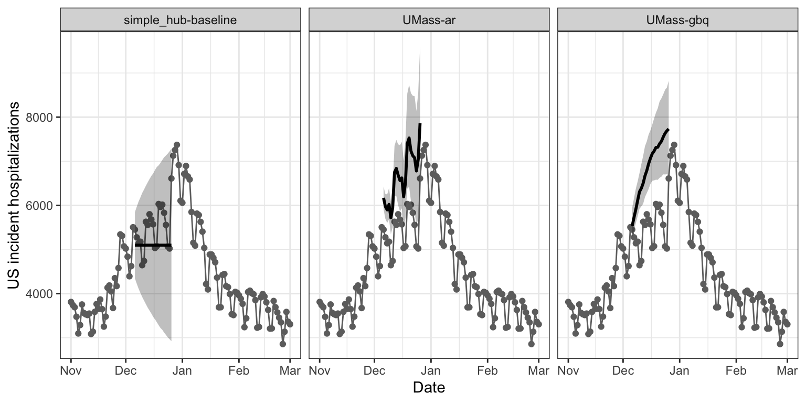
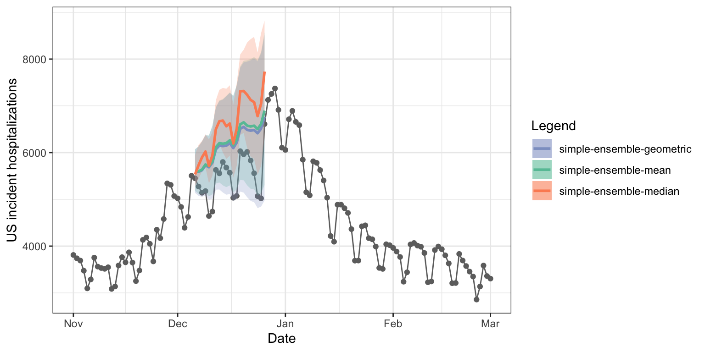
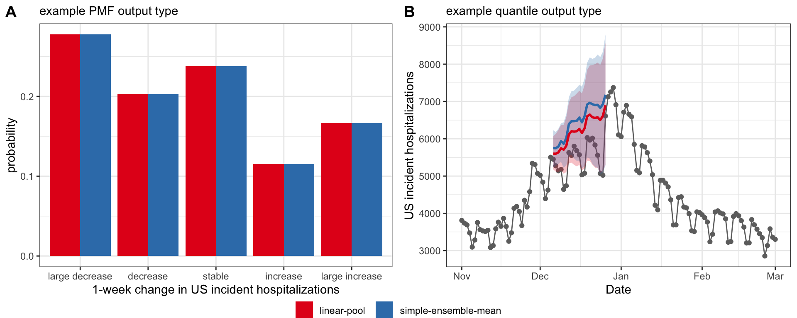
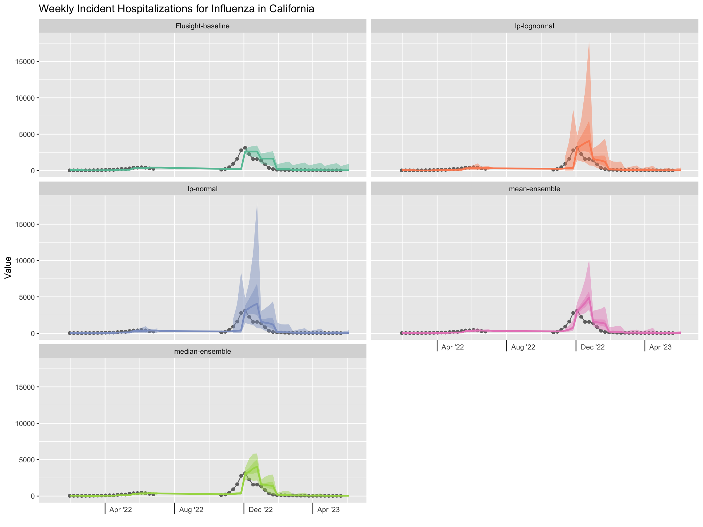
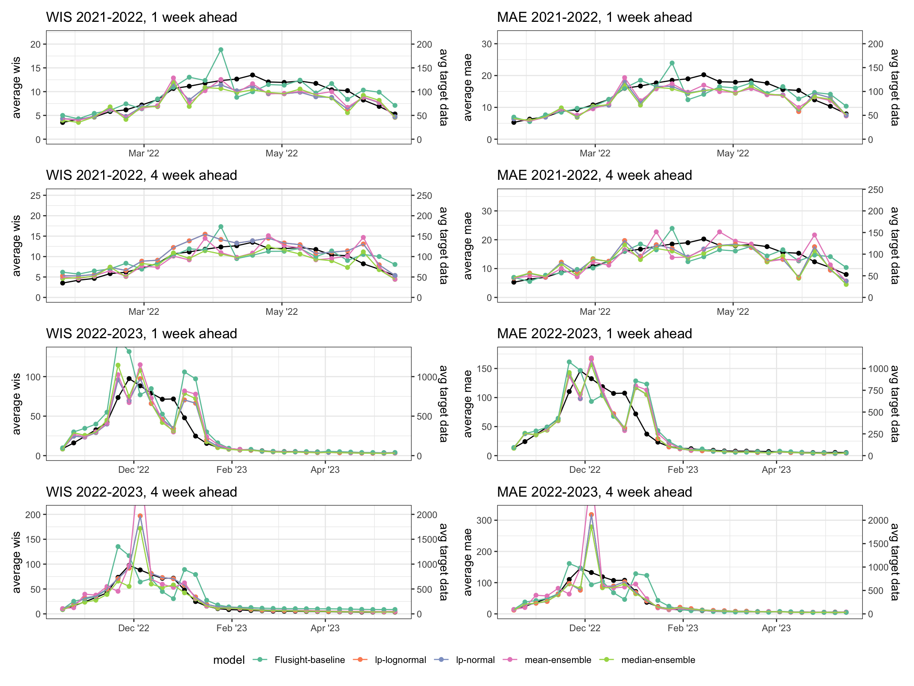
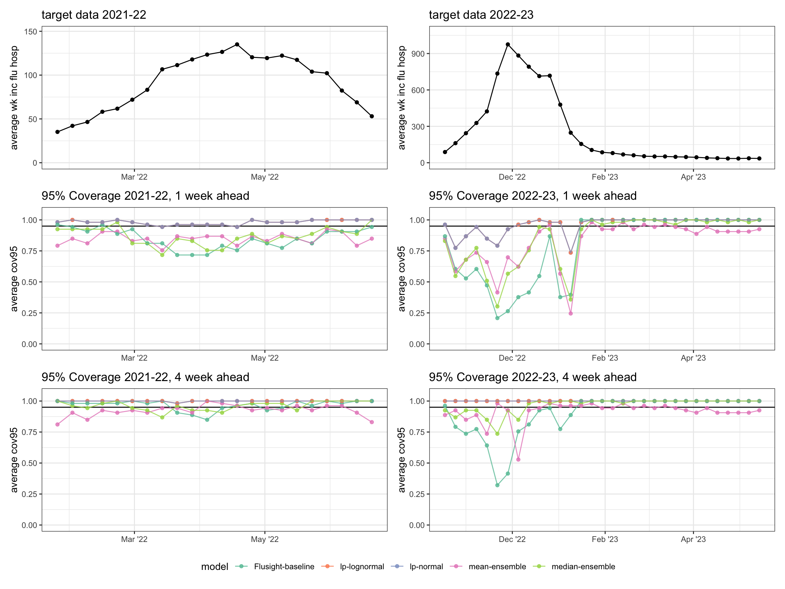

| model_id | reference_date | location | horizon | target | output_type | output_type_id | value |
|---|---|---|---|---|---|---|---|
| CMU-TimeSeries | 2023-05-15 | US | 1 | wk ahead inc flu hosp | quantile | 0.01 | 161.7159 |
| CMU-TimeSeries | 2023-05-15 | US | 1 | wk ahead inc flu hosp | quantile | 0.10 | 551.9048 |
| CMU-TimeSeries | 2023-05-15 | US | 1 | wk ahead inc flu hosp | quantile | 0.25 | 770.3606 |
| CMU-TimeSeries | 2023-05-15 | US | 1 | wk ahead inc flu hosp | quantile | 0.50 | 982.6212 |
| CMU-TimeSeries | 2023-05-15 | US | 1 | wk ahead inc flu hosp | quantile | 0.75 | 1258.2589 |
| CMU-TimeSeries | 2023-05-15 | US | 1 | wk ahead inc flu hosp | quantile | 0.90 | 1637.5332 |
| CMU-TimeSeries | 2023-05-15 | US | 1 | wk ahead inc flu hosp | quantile | 0.99 | 3550.7687 |
The hubEnsembles package
Li Shandross ![]()
Emily Howerton
Evan Ray
Abstract
Predictions of future outcomes are essential to planning and decision making, yet generating reliable predictions of the future is challenging. One method for overcoming this challenge is combining predictions across multiple, independent models.
Introduction
Predictions of future outcomes are essential to planning and decision making, yet generating reliable predictions of the future is challenging. One method for overcoming this challenge is combining predictions across multiple, independent models. These combination methods (also called aggregation or ensembling) have been repeatedly shown to produce predictions that are more accurate (Clemen 1989; Timmermann 2006) and more consistent (Hibon and Evgeniou 2005) than individual models. Because of the clear performance benefits, multi-model ensembles are commonplace across fields, including weather (Alley, Emanuel, and Zhang 2019), climate (Tebaldi and Knutti 2007), and economics (Aastveit et al. 2018). More recently, multi-model ensembles have been used to improve predictions of infectious disease outbreaks (Viboud et al. 2018; Johansson et al. 2019; McGowan et al. 2019; Cramer et al. 2022).
Across this vast literature, there are many proposed methods for generating ensembles. Generally, these methods differ in at least one of two ways: (1) the function used to combine or “average” predictions, and (2) how predictions are weighted when performing the combination. No one method is universally “the best”; a simple average of predictions works surprisingly well across a range of settings (Winkler 2015), but more complex approaches have also been shown to have benefits (McAndrew et al. 2021). Here, we present the hubEnsembles package, which provides a flexible framework for generating ensemble predictions from multiple models. Complementing other software for combining predictions from multiple models (e.g., (Pedregosa et al. 2011; Weiss, Raviv, and Roetzer 2019; Bosse et al. 2023; Couch and Kuhn 2023)), hubEnsembles supports multiple types of predictions, from point estimates to probabilistic predictions. Throughout, we will use the term “prediction” to refer to any kind of model output that may be combined including a forecast, a scenario projection, or a parameter estimate.
The hubEnsembles package is part of a larger collection of open-source software and data tools that enables collaborative modelling exercises called the “hubverse” (https://hubdocs.readthedocs.io/en/latest/index.html). The broader “hubverse” initiative is motivated by the demonstrated benefits of collaborative hubs (Reich et al. 2022), including performance improvements of multi-model ensembles and the desire for standardization across such hubs. In this paper, we focus specifically on the functionality encompassed in hubEnsembles. We provide an overview of the methods implemented, including mathematical definitions and properties (Section 2) as well as implementation details (Section 3); we give simple examples to demonstrate the functionality (Section 4) and a more complex case study (Section 5) that motivates a discussion and comparison of the various methods (Section 6).
Mathematical definitions and properties of ensemble methods
The hubEnsembles package supports both point predictions and probabilistic predictions of different formats. A point prediction gives a single estimate of a future outcome while a probabilistic prediction provides an estimated probability distribution over a future outcome. We use \(N\) to denote the total number of individual predictions that the ensemble will combine. For example, these predictions will often be produced by different statistical or mathematical models, and \(N\) is the total number of models. Individual predictions will be indexed by the subscript \(i\). Optionally, the package allows for calculating ensembles that use a weight \(w_i\) for each prediction. Informally, predictions with a larger weight have a greater influence on the value of the ensemble prediction, though the details of this depend on the ensemble method (described further below).
For a set of point predictions, \(p_i\), each from a distinct model \(i\), the hubEnsembles package can compute an ensemble of these predictions
\[ p_E = C(p_i, w_i) \]
using any function \(C\), and model-specific weights \(w_i\). For example, an arithmetic average of predictions yields \(p_E = \sum_{i=1}^Np_iw_i\), where the weights are non-negative and sum to 1. If \(w_i = 1/N\) for all \(i\), all predictions will be equally weighted. This framework can also support more complex functions for aggregation, such as a (weighted) median or geometric mean.
For probabilistic predictions, there are two commonly used classes of methods to average or ensemble multiple predictions: quantile averaging (also called a Vincent average (Vincent 1912)) and probability averaging (also called a distributional mixture or linear opinion pool (Stone 1961)) (Lichtendahl, Grushka-Cockayne, and Winkler 2013). To define these two classes of methods, let \(F(x)\) be a cumulative density function (CDF) defined over values \(x\) of the target variable for the prediction, and \(F^{-1}(\theta)\) be the corresponding quantile function defined over quantile levels \(\theta \in [0, 1]\). Additionally, we will use \(f(x)\) to denote a probability mass function (PMF) for a prediction of a discrete variable or a discretization (such as binned values) of a continuous variable.
The quantile average is calculated as \[ F^{-1}_Q(\theta) = \sum_{i = 1}^Nw_iF^{-1}_i(\theta). \] This computes the average value of predictions across different models for each fixed quantile level \(\theta\). It is also possible to use other combination functions, such as a weighted median, to combine quantile predictions.
The probability average or linear pool is calculated by averaging probabilities across predictions for a fixed value of the target variable, \(x\). This can be expressed in terms of either predictive CDFs or PDFs as follows: \[\begin{align*} F_{LOP}(x) &= \sum_{i = 1}^Nw_iF_i(x), \\ f_{LOP}(x) &= \sum_{i = 1}^Nw_if_i(x). \end{align*}\]
The different averaging methods for probabilistic predictions yield different properties of the resulting ensemble distribution. For example, the variance of the linear pool is \(\sigma^2_{LOP} = \sum_{i=1}^Nw_i\sigma_i^2 + \sum_{i=1}^Nw_i(\mu_i-\mu_{LOP})^2\), where \(\mu_i\) is the mean and \(\sigma^2_i\) is the variance of individual prediction \(i\), and although there is no closed-form variance for the quantile average, the variance of the quantile average will always be less than or equal to that of the linear pool (Lichtendahl, Grushka-Cockayne, and Winkler 2013). Both methods generate distributions with the same mean, \(\mu_Q = \mu_{LOP} = \sum_{i=1}^Nw_i\mu_i\), which is the mean of individual model means (Lichtendahl, Grushka-Cockayne, and Winkler 2013). The linear pool method preserves variation between individual models, whereas the quantile average cancels away this variation under the assumption it constitutes sampling error (Howerton et al. 2023).
Model implementation details
To understand how these methods are implemented in hubEnsembles, we first must define the conventions employed by the hubverse and its packages for representing and working with model predictions. We begin with a short overview of concepts and conventions needed to utilize the hubEnsembles package, then explain the implementation of the two ensembling functions provided by the package, simple_ensemble and linear_pool.
Hubverse terminology and conventions
Model output is a central concept in the hubEnsembles package which generally refers to a specially formatted tabular representation of predictions produced by a modeling team. Each row represents a single, unique prediction with each column providing information about what is being predicted, its scope, and its value. Per hubverse convention, the columns may be broken down into task IDs, specification of the model output representation, and the model ID (Infectious Disease Modeling Hubs 2022).
At minimum the task IDs (also called task ID variables) together specify the desired outcome being predicted, but they may also include additional information, such as any conditions or assumptions that were used to generate the predictions (Infectious Disease Modeling Hubs 2022). For example, short-term forecasts of incident influenza hospitalizations in the US at different locations and amounts of time in the future (see Table Table 1 below) might represent this information using a target column with the value “wk ahead inc flu hosp”, a location column identifying the location being predicted, a reference_date column with the “starting point” of the forecasts, and a horizon column with the number of steps ahead that the forecast is predicting relative to the reference_date. All these variables make up the task ID columns (Infectious Disease Modeling Hubs 2022).
Alternatively, longer-term scenario projections for incident COVID-19 hospitalizations in the US at different locations, amounts of time in the future, and under different assumed conditions may use the following task ID columns: a target of “incident COVID-19 hospitalizations”, a location column specifying the location being predicted, an origin_date on which the projections were made, a horizon describing the number of steps ahead that the projection is predicting relative to the origin_date, and a scenario_id denoting the future conditions that were modeled and are projected to result in the specified number of incident hospitalizations. Different modeling efforts may use different sets of task ID columns and values to specify their prediction goals. Additional examples of task ID variables are available on the hubverse documentation website.
The model output representation includes the predicted values along with metadata that specifies how the predictions are conveyed, and consists of three columns: (1) output_type, (2) output_type_id, and (3) value. Unlike for the task IDs, these three columns are required and their names are fixed (Infectious Disease Modeling Hubs 2022). The output_type defines how the prediction is represented and may be one of "mean" or "median" (point prediction), "quantile", "cdf", "pmf" (distributional prediction), or "sample" (although this output type is not yet supported by the hubEnsembles package). The output_type_id provides more identifying information for a prediction and is specific to the particular output_type (see Table Table 1). For quantile predictions, the output_type_id is a numeric value between 0 and 1 specifying the probability level for the quantile. In the notation we defined above, the output_type_id corresponds to \(\theta\) and the value of the prediction is the quantile estimate \(F^{-1}(\theta)\). For CDF or PMF predictions, the output_type_id is the value \(x\) at which the cumulative distribution function or probability mass function for the predictive distribution should be evaluated, and the value column contains the estimate \(F(x)\) or \(f(x)\), respectively. Requirements for the values of the output_type_id and value columns associated with each valid output type are summarized on the hubverse documentation website and in Table Table 1 below. Finally, the model_id column gives a unique identifier of the model that created the predictions.
output_type |
output_type_id |
value |
|---|---|---|
mean |
NA (not used for mean predictions) | Numeric: The mean of the predictive distribution |
median |
NA (not used for median predictions) | Numeric: The median of the predictive distribution |
quantile |
Numeric between 0.0 and 1.0: A probability level | Numeric: The quantile of the predictive distribution at the probability level specified by the output_type_id |
cdf |
Numeric within the support of the outcome variable: a possible value of the target variable | Numeric between 0.0 and 1.0: The value of the cumulative distribution function of the predictive distribution at the value of the outcome variable specified by the output_type_id |
pmf |
String naming a possible category of a discrete outcome variable | Numeric between 0.0 and 1.0: The value of the probability mass function of the predictive distribution when evaluated at a specified level of a categorical outcome variable |
sample |
Positive integer sample index | Numeric: A sample from the predictive distribution |
Simple ensemble
The simple_ensemble function directly computes an ensemble from component model outputs by combining them via some function (\(C\)) within each unique combination of task ID variables, output types, and output type IDs. This function can be used to summarize predictions of output types mean, median, quantile, CDF, and PMF. The mechanics of the ensemble calculations are the same for each of the output types, though the resulting statistical ensembling method differs for different output types as described below. An aggregation function \(C\) of choice may be specified by the user.
By default, simple_ensemble uses the mean for the aggregation function \(C\) and equal weights for all models. For point predictions with a mean or median output type, the resulting ensemble prediction is an equally weighted average of the individual models’ predictions. For probabilistic predictions in a quantile format, by default simple_ensemble produces an equally weighted quantile average, and for model outputs in a CDF or PMF format, by default simple_ensemble computes an equally weighted linear opinion pool.
A median ensemble may also be created by specifying “median” as the aggregation function, or a custom function may be passed to the agg_fun argument to create other ensemble types. Similarly, model weights can be specified to create a weighted ensemble. These weights are allowed to vary for different task ID values, and for predictions of quantile output type, the weights may also be different for different quantile probability levels (corresponding to values of the output_type_id column).
Linear pool
The linear_pool function implements the linear opinion pool method for ensembling projections. This function can be used to combine predictions with output types mean, quantile, CDF, and PMF. Unlike simple_ensemble, this function handles its computation differently based on the output type. For the CDF, PMF, and mean output types, the linear pool method is equivalent to calling simple_ensemble with a mean aggregation function, since simple_ensemble produces a linear pool prediction (an average of probabilities for the same prediction value or bin) for those output types.
However, implementation of LOP is less straightforward for the quantile output type. This is because LOP averages CDF values (probabilities) at each value of the target variable, but the predictions are quantiles (on the scale of the target variable) for fixed probability levels. The value for these quantile predictions will generally differ between models, and as a result we are typically not provided CDF values at the same values of \(x\) for all component predictions. This lack of alignment between CDF values for the same probability levels impedes computation of LOP from quantile forecasts and is illustrated in Figure 1 Panel A below.

Given that LOP cannot be directly calculated from quantile predictions, we must first obtain an estimate of the CDF for each component distribution using the provided quantiles, combine the CDFs, then calculate the quantiles from the ensemble’s CDF. We perform this calculation in three main steps, assisted by the distfromq package (Ray and Gerding 2024) for the first two:
- Interpolate and extrapolate from the provided quantiles for each component model to obtain an estimate of the CDF of that particular distribution.
- Draw samples from each component model distribution. To reduce Monte Carlo variability, we use quasi-random samples corresponding to quantiles of the estimated distribution (Niederreiter 1992).
- Pool the samples from all component models and extract the desired quantiles.
For step 1, functionality in the distfromq package uses a monotonic cubic spline for interpolation on the interior of the provided quantiles. The user may choose one of several distributions to perform extrapolation of the CDF tails. These include normal, lognormal, and cauchy distributions, with “normal” set as the default. A location-scale parameterization is used, with separate location and scale parameters chosen in the lower and upper tails so as to match the two most extreme quantiles (Ray and Gerding 2024).
Demonstration of functionality
In this section, we provide a simple example to illustrate the two main functions in hubEnsembles, simple_ensemble and linear_pool. We will use the following R packages:
library(dplyr)
library(tidyr)
library(ggplot2)
library(hubUtils)
library(hubVis)
library(hubEnsembles)Example data: a simple forecast hub
We will use the example-simple-forecast-hub, which has been created by the Consortium of Infectious Disease Modeling Hubs as a simple example hub to demonstrate the set up and functionality for the hubverse. The hub includes both example model output data and target data (sometimes known as “truth” data). The model output data includes quantile, mean and median forecasts of future incident COVID-19 hospitalizations, and pmf forecasts of the probability that the change in hospitalizations will be a “large decrease”, “decrease”, “stable”, “increase”, “large increase”.
First we load the example model output data and the target data using the connect_hub() function from hubUtils, a package containing various utility functions for use with other hubverse tools.
hub_path <- system.file("example-data/example-simple-forecast-hub",
package = "hubEnsembles"
)
model_outputs <- hubUtils::connect_hub(hub_path) |>
dplyr::collect()
target_data_path <- file.path(hub_path, "target-data", "covid-hospitalizations.csv")
target_data <- read.csv(target_data_path) |>
dplyr::mutate(time_idx = as.Date(time_idx))Each forecast is made for four task ID variables, including the date the forecast was made (origin_date), the number of steps ahead (horizon), the location for which the forecast was made (location), and the forecast target (target). Below is an example from a single model, UMass-ar, for the 1-week ahead forecast of US incident hospitalizations made on December 12, 2022. We print only the median and the 50%, 80%, and 98% prediction intervals, though other intervals and output types are included in the model output.
model_outputs |>
dplyr::filter(
output_type %in% c("quantile", "median"),
output_type_id %in% c(0.01, 0.1, 0.25, 0.75, 0.9, 0.99, NA),
origin_date == "2022-12-12",
location == "US",
horizon == 7
) |>
head(n = 7L)
## # A tibble: 7 × 8
## origin_date horizon location target output_type output_type_id value model_id
## <date> <int> <chr> <chr> <chr> <chr> <dbl> <chr>
## 1 2022-12-12 7 US inc co… quantile 0.01 4205 UMass-ar
## 2 2022-12-12 7 US inc co… quantile 0.1 5599 UMass-ar
## 3 2022-12-12 7 US inc co… quantile 0.25 6378 UMass-ar
## 4 2022-12-12 7 US inc co… quantile 0.75 8533 UMass-ar
## 5 2022-12-12 7 US inc co… quantile 0.9 9539 UMass-ar
## 6 2022-12-12 7 US inc co… quantile 0.99 11801 UMass-ar
## 7 2022-12-12 7 US inc co… median <NA> 7403 UMass-arThe target data is specified for some of the same task ID variables. This data provides the observed value (value) for the forecast target (target) on a given single day (time_idx) and in a given location (location); the forecast-specific task ID variables (origin_date and horizon) are not relevant.
head(target_data |>
dplyr::filter(
location == "US",
time_idx >= "2022-12-12"
))
## time_idx location value target
## 1 2022-12-12 US 5629 inc covid hosp
## 2 2022-12-13 US 5556 inc covid hosp
## 3 2022-12-14 US 5799 inc covid hosp
## 4 2022-12-15 US 5680 inc covid hosp
## 5 2022-12-16 US 5570 inc covid hosp
## 6 2022-12-17 US 5034 inc covid hospWe can plot these forecasts and the target data using the plot_step_ahead_model_output() function from hubVis, another package from the hubverse suite for visualizing model outputs.
hubVis::plot_step_ahead_model_output(
model_output_data = model_outputs |>
dplyr::filter(
location == "US",
output_type %in% c("median", "mean", "quantile"),
origin_date == "2022-12-12"
) |>
dplyr::mutate(
target_date = origin_date + horizon,
output_type_id = as.double(output_type_id)
),
truth_data = target_data |>
dplyr::filter(
location == "US",
time_idx >= "2022-11-01",
time_idx <= "2023-03-01"
),
facet = "model_id",
facet_nrow = 1,
interactive = FALSE,
intervals = 0.5,
one_color = "black",
pal_color = NULL,
show_legend = FALSE,
use_median_as_point = TRUE,
) +
theme_bw() +
labs(y = "US incident hospitalizations")
Creating ensembles with simple_ensemble
Using the default options for simple_ensemble(), we can generate an equally weighted mean ensemble for each unique combination of values for the task ID variables (here, origin_date, horizon, location, and target), the output_type and the output_type_id. Note that this means that different ensemble methods are used for different output types: for the quantile output type in our example data, the resulting ensemble is a quantile average, while for the pmf output type, the ensemble is a linear pool.
mean_ens <- hubEnsembles::simple_ensemble(model_outputs,
model_id = "simple-ensemble-mean"
)The resulting model output has the same structure as the original model output data, with columns for the model ID, task ID variables, output type, output type ID, and value. We will also use model_id = "simple-ensemble to change the name of this ensemble in the resulting data frame; if not specified, the default will be “hub-ensemble”.
head(mean_ens |>
dplyr::filter(
output_type %in% c("quantile", "median"),
output_type_id %in% c(0.01, 0.1, 0.25, 0.75, 0.9, 0.99, NA),
origin_date == "2022-12-12",
location == "US",
horizon == 7
))
## # A tibble: 6 × 8
## model_id origin_date horizon location target output_type output_type_id value
## <chr> <date> <int> <chr> <chr> <chr> <chr> <dbl>
## 1 simple-e… 2022-12-12 7 US inc c… median <NA> 6604.
## 2 simple-e… 2022-12-12 7 US inc c… quantile 0.01 2291.
## 3 simple-e… 2022-12-12 7 US inc c… quantile 0.1 4224.
## 4 simple-e… 2022-12-12 7 US inc c… quantile 0.25 5415.
## 5 simple-e… 2022-12-12 7 US inc c… quantile 0.75 7846.
## 6 simple-e… 2022-12-12 7 US inc c… quantile 0.9 9189Changing the aggregation function
We can change the function that is used to aggregate model outputs. For example, we may want to calculate a median of the component models’ submitted values for each quantile. We do so by specifying agg_fun = median.
median_ens <- hubEnsembles::simple_ensemble(model_outputs,
agg_fun = median,
model_id = "simple-ensemble-median"
)Custom functions can also be passed into the agg_fun argument. For example, in some circumstances a geometric mean may be a more appropriate way to combine component model outputs; here we define a custom function geometric_mean() to do so. Any custom function to be used requires an argument x for the vector of numeric values to summarize, and if relevant, an argument w of numeric weights. Then, we can use this custom function to ensemble the component model outputs, again using agg_fun = geometric_mean.
geometric_mean <- function(x) {
n <- length(x)
return(prod(x)^(1 / n))
}
geometric_mean_ens <- hubEnsembles::simple_ensemble(model_outputs,
agg_fun = geometric_mean,
model_id = "simple-ensemble-geometric"
)As expected, the mean, median, and geometric mean each give us slightly different resulting ensembles. The median point estimates and 50% prediction intervals in Figure @ref(fig:plot-ensembles) demonstrate this.
hubVis::plot_step_ahead_model_output(
model_output_data = dplyr::bind_rows(
mean_ens,
median_ens,
geometric_mean_ens
) |>
dplyr::filter(
location == "US",
output_type %in% c("median", "mean", "quantile"),
origin_date == "2022-12-12"
) |>
dplyr::mutate(
target_date = origin_date + horizon,
output_type_id = as.double(output_type_id)
),
truth_data = target_data |>
dplyr::filter(
location == "US",
time_idx >= "2022-11-01",
time_idx <= "2023-03-01"
),
use_median_as_point = TRUE,
interactive = FALSE,
intervals = 0.5,
show_legend = TRUE
) +
theme_bw() +
labs(y = "US incident hospitalizations")
Weighting model contributions
In addition, we can weight the contributions of each model in the ensemble by providing a data.frame that specifies these weights. For example, if we want to include the baseline model in the ensemble, but give it less weight than the other forecasts, we would use the weights = model_weights argument, where model_weights is a data.frame with a model_id column containing each unique model_id and a weight column. The argument weights_col_name can optionally be used in the case where the data.frame defines model weights in a column named something other than weight.
model_weights <- data.frame(
model_id = c("UMass-ar", "UMass-gbq", "simple_hub-baseline"),
weight = c(0.4, 0.4, 0.2)
)
weighted_mean_ens <- hubEnsembles::simple_ensemble(model_outputs,
weights = model_weights,
model_id = "simple-ensemble-weighted-mean"
)Creating ensembles with linear_pool
We can also generate a linear pool ensemble, or distributional mixture, using the linear_pool() function; this function can be applied to predictions with an output_type of mean, quantile, cdf, or pmf. Our example hub includes median output type, so we exclude it from the calculation.
linear_pool_ens <- hubEnsembles::linear_pool(
model_outputs |>
dplyr::filter(output_type != "median"),
model_id = "linear-pool"
)As described above, for quantile model outputs, the linear_pool function approximates the full probability distribution for each component prediction using the value-quantile pairs provided by that model, and then obtains quasi-random samples from that distributional estimate. The number of samples drawn from the distribution of each component model defaults to 1e4, but this can be changed using the n_samples argument.
In Figure @ref(fig:plot-ex-quantile-and-linear-pool), we compare ensemble results generated by simple_ensemble and linear_pool for model outputs of output types PMF and quantile. As expected, the results from the two functions are equivalent for the PMF output type (because averaging probability bins is the definition of the linear pool method). This is not the case for the quantile output type, because the simple_ensemble is computing a quantile average.

simple_ensemble (blue) and linear pool (red). (Panel A) Ensemble predictions of 1-week change in US incident hospitalizations (classified as large decrease, decrease, stable, increase, large increase), which provide an example of PMF output type. (Panel B) Ensemble predictions of daily US incident COVID-19 hospitalizations, which provide an example of quantile output type. Note, for quantile output type, simple_ensemble corresponds to a quantile average. Ensembles combine individual models from the example hub (Fig @ref(fig:plot-ex-mods)).Case study: Weekly incident flu hospitalizations
To demonstrate the utility of the hubEnsembles package and the differences between the two ensembling functions, we examine the case of predicting weekly influenza hospitalizations in the US.
Since 2013 the US Center for Disease Control and Prevention (CDC) has been soliciting forecasts of seasonal influenza from modeling teams through a collaborative challenge called FluSight (CDC 2023). Here we combine these forecasts using various aggregation methods to take advantage of the greater consistency (Hibon and Evgeniou 2005) and accuracy (Clemen 1989; Timmermann 2006) of ensembles over individual models. In particular, we examine four equally-weighted ensembling methods implemented through simple_ensemble() and linear_pool(): a quantile (arithmetic) mean, a quantile median, a linear pool with normal tails, and a linear pool with lognormal tails.
The component forecasts used to generate the ensembles consist of those submitted during influenza seasons 2021-2022 and 2022-2023, the only two complete seasons for which FluSight collected quantile forecasts for a target of weekly incident flu hospitalizations at the time of this writing. These predictions are not yet formatted according to hubverse standards but are easily transformed using the as_model_out_tbl() function from the hubUtils package. Below we print the first six rows of the transformed forecasts made on May 15, 2023 for California.
flu_forecasts_raw <- readr::read_rds("data/flu_forecasts_raw.rds")
forecast_data_hub <- flu_forecasts_raw |>
dplyr::rename(forecast_date = timezero, location = unit) |>
tidyr::separate(target, sep = " ", convert = TRUE, into = c("horizon", "target"), extra = "merge") |>
as_model_out_tbl(
model_id_col = "model",
output_type_col = "class",
output_type_id_col = "quantile",
value_col = "value",
sep = "-",
trim_to_task_ids = FALSE,
hub_con = NULL,
task_id_cols = c("forecast_date", "location", "horizon", "target"),
remove_empty = TRUE
)
forecast_data_hub |>
dplyr::filter(location == "06") |>
head() |>
knitr::kable()| model_id | forecast_date | season | location | horizon | target | output_type | output_type_id | value |
|---|---|---|---|---|---|---|---|---|
| CADPH-FluCAT_Ensemble | 2023-05-15 | 2022-2023 | 06 | 1 | wk ahead inc flu hosp | quantile | 0.010 | 0.000000 |
| CADPH-FluCAT_Ensemble | 2023-05-15 | 2022-2023 | 06 | 1 | wk ahead inc flu hosp | quantile | 0.025 | 0.000000 |
| CADPH-FluCAT_Ensemble | 2023-05-15 | 2022-2023 | 06 | 1 | wk ahead inc flu hosp | quantile | 0.050 | 4.387663 |
| CADPH-FluCAT_Ensemble | 2023-05-15 | 2022-2023 | 06 | 1 | wk ahead inc flu hosp | quantile | 0.100 | 10.779742 |
| CADPH-FluCAT_Ensemble | 2023-05-15 | 2022-2023 | 06 | 1 | wk ahead inc flu hosp | quantile | 0.150 | 14.898658 |
| CADPH-FluCAT_Ensemble | 2023-05-15 | 2022-2023 | 06 | 1 | wk ahead inc flu hosp | quantile | 0.200 | 18.263880 |
Within the now-properly formatted model outputs, the task ID variables are horizon, location, target, and forecast date (the date on which the forecast was made). All of the forecasts have a quantile output type with 23 total unique output type IDs \[Q = \{.010, 0.025, .050, .100, \cdots, .900, .950, .990\}.\] The values of these quantile forecasts are non-negative. The resulting ensemble forecasts will have the same task ID variables and model output specifications.
Next the component model outputs are combined using the following code to generate each model, then repeated for every forecast date.
mean_ensemble <- forecast_data_hub |>
filter(model_id != "Flusight-baseline") |>
hubEnsembles::simple_ensemble(weights = NULL, agg_fun = "mean", model_id = "mean-ensemble")
median_ensemble <- forecast_data_hub |>
filter(model_id != "Flusight-baseline") |>
hubEnsembles::simple_ensemble(weights = NULL, agg_fun = "median", model_id = "median-ensemble")
lp_normal <- forecast_data_hub |>
filter(model_id != "Flusight-baseline") |>
hubEnsembles::linear_pool(weights = NULL, n_samples = 1e5, model_id = "lp-normal", tail_dist = "norm")
lp_lognormal <- forecast_data_hub |>
filter(model_id != "Flusight-baseline") |>
hubEnsembles::linear_pool(weights = NULL, n_samples = 1e5, model_id = "lp-lognormal", tail_dist = "lnorm")We score the ensemble forecasts for every unique combination of task ID variables against target data using several common metrics in forecast evaluation, including weighted interval score (WIS) (Bracher et al. 2021), mean absolute error (MAE), 50% prediction interval (PI) coverage, and 95% PI coverage. Of these metrics, WIS and PI coverage evaluate probabilistic forecasts while MAE evaluates point forecasts. In this analysis, we take the 0.5 quantile to be the point forecast.
WIS measures how consistent a set of prediction intervals is with the true value and is an alternative to common proper scoring rules like the Log Score and Continuous Ranked Probability Score, which can’t be evaluated directly for quantile forecasts (Bracher et al. 2021). Since WIS is made up of three component penalties—one for each of spread, over-prediction, and under-prediction—a lower value indicates a more accurate forecast (Bracher et al. 2021). The \((1-\alpha)*100\)% PI coverage measures the proportion of the time that PIs at that nominal level included the true value, which provides information about whether a forecast has accurately characterized the uncertainty of future observations. Achieving approximately nominal (\((1-\alpha)*100\)%) coverage indicates a well-calibrated forecast. MAE measures the average absolute error of a set of forecasts against the true value; smaller values of MAE indicate better forecast accuracy.
The results show that the quantile median ensemble had the best overall performance in terms of WIS and MAE (and the relative versions of these metrics) with above-nominal coverage rates (Table @ref(tab:overall-evaluation)). The two linear opinion pools had very similar performance to each other. These methods had the second-best performance as measured by WIS and MAE, but they had the highest 50% and 95% coverage rates, with empirical coverage that was well above the nominal coverage rate. The quantile mean performed the worst of the ensembles with the highest MAE, which was substantially different from that of the other ensembles.
| model | wis | mae | cov50 | cov95 | rwis | rmae |
|---|---|---|---|---|---|---|
| median-ensemble | 18.158 | 27.36 | 0.597 | 0.922 | 0.794 | 0.933 |
| lp-normal | 19.745 | 27.932 | 0.709 | 0.99 | 0.863 | 0.953 |
| lp-lognormal | 19.747 | 27.933 | 0.708 | 0.99 | 0.863 | 0.953 |
| mean-ensemble | 20.18 | 29.582 | 0.595 | 0.889 | 0.882 | 1.009 |
| Flusight-baseline | 22.876 | 29.315 | 0.604 | 0.881 | 1 | 1 |
Plots of the models’ forecasts can aid our understanding about the origin of these accuracy differences. For example, the linear opinion pools, which had the highest coverage rates, consistently had some of the widest prediction intervals. The median ensemble, which had the best WIS, seems to have best-balanced interval width overall, with narrower intervals than the linear pools that achieved near-nominal coverage on average across all time points. The quantile mean’s interval widths could vary, though it usually had narrower intervals than the linear pools. However, this model’s point forecasts demonstrated a larger error margin compared to the other ensembles, especially at longer horizons. This can be seen in Figure @ref(fig:plot-forecasts-hubVis) for the 4-week ahead forecast in California following the 2022-23 season peak on December 5, 2022. Here the quantile mean is predicting a continued increase in hospitalizations while the other models predict a flat or slightly downward trend.

When examining the forecasts week-by-week across all locations, the ensemble models tend to have similar MAE values during the entire time period. This is especially prevalent at the one-week ahead horizon, with slight divergence in MAE values for certain weeks at the four week ahead horizon Figure @ref(fig:wis-mae-vs-forecast-date). However, the models show greater differences for the other two metrics, particularly during times of rapid change (Figure @ref(fig:wis-mae-vs-forecast-date)), with the scores aligning near-perfectly with the observed weekly incident hospitalizations. In fact, the linear pools have a lower WIS than the median ensemble at the one week ahead forecast horizon for over a third of forecast dates (11 weeks) during the 2022-2023 season: from October 17, 2022 to December 12, 2022; January 2, 2023; and January 9, 2023. These dates span the rapid rise and fall of incident flu hospitalizations surrounding the season’s peak, with the largest differences in WIS occurring on November 28, December 5, December 12, January 2, and January 9. Additionally, the PI coverage rates for the linear pools were at least as large as the coverage rates of the other models throughout the entire period of analysis at both the 1 and 4 week ahead forecast horizons (see Figure @ref(fig:cov95-vs-forecast-date)).


From these results, we can see that different ensembling methods perform best under different circumstances, though in this analysis all of the ensemble variations outperformed the baseline model. While the quantile median had the best overall results for WIS, MAE, 50% PI coverage, and 95% PI coverage, other models may perform better from week-to-week for each metric. For example, the linear pools achieved the lowest WIS during the period of rapid change in incident flu hospitalizations surrounding the season’s peak in early December 2022.
Depending on the target being forecast or the goal of forecasting, the user may opt to choose a particular aggregation method that is most aligned with the objectives. One case may call for prioritizing above-nominal coverage rates while another may be more interested in accurate point forecasts. The simple_ensemble and linear_pool functions and the ability to specify component model weights and an aggregation function for simple_ensemble allow users to implement a variety of ensemble methods.
Conclusion
Ensembles of independent models are a powerful tool to generate more accurate and more reliable forecasts of future outcomes than a single model alone. Here, we have demonstrated how to utilize hubEnsembles, a simple and flexible framework to combine individual model forecasts and create ensemble predictions. When using hubEnsembles, it is important to carefully choose an ensemble method that is well suited for the situation. Although there may not be a “best” method, matching the properties of a given ensemble method with the features of the component models will likely yield best results. For example, we showed for forecasts of seasonal influenza in the US, the quantile median ensemble performed best overall, but the linear pool method had advantages during periods of rapid change, when outlying component forecasts were likely more important. Notably, all ensemble methods outperformed the baseline model. These performance improvements from ensemble models motivate the use of a “hub-based” approach to prediction for infectious diseases and in other fields. Fitting within the larger suite of “hubverse” tools that support such efforts, the hubEnsembles package provides important software infrastructure for leveraging the power of multi-model ensembles.
References
Aastveit, Knut Are, James Mitchell, Francesco Ravazzolo, and Herman K. van Dijk. 2018. “The Evolution of Forecast Density Combinations in Economics.” Amsterdam; Rotterdam. https://www.econstor.eu/handle/10419/185588.
Alley, Richard B., Kerry A. Emanuel, and Fuqing Zhang. 2019. “Advances in Weather Prediction.” Science 363 (6425): 342–44. https://doi.org/10.1126/science.aav7274.
Bosse, Nikos, Yuling Yao, Sam Abbott, and Sebastian Funk. 2023. Stackr: Create Mixture Models From Predictive Samples. http://epiforecasts.io/stackr/.
Bracher, Johannes, Evan L. Ray, Tilmann Gneiting, and Nicholas G. Reich. 2021. “Evaluating Epidemic Forecasts in an Interval Format.” PLOS Computational Biology 17 (2): e1008618. https://doi.org/10.1371/journal.pcbi.1008618.
CDC. 2023. “About Flu Forecasting.” https://www.cdc.gov/flu/weekly/flusight/how-flu-forecasting.htm.
Clemen, Robert T. 1989. “Combining Forecasts: A Review and Annotated Bibliography.” International Journal of Forecasting 5 (4): 559–83. https://doi.org/10.1016/0169-2070(89)90012-5.
Couch, Simon, and Max Kuhn. 2023. Stacks: Tidy Model Stacking. https://stacks.tidymodels.org/.
Cramer, Estee Y., Evan L. Ray, Velma K. Lopez, Johannes Bracher, Andrea Brennen, Alvaro J. Castro Rivadeneira, Aaron Gerding, et al. 2022. “Evaluation of Individual and Ensemble Probabilistic Forecasts of COVID-19 Mortality in the United States.” Proceedings of the National Academy of Sciences 119 (15): e2113561119. https://doi.org/10.1073/pnas.2113561119.
Hibon, Michèle, and Theodoros Evgeniou. 2005. “To Combine or Not to Combine: Selecting Among Forecasts and Their Combinations.” International Journal of Forecasting 21 (1): 15–24. https://doi.org/10.1016/j.ijforecast.2004.05.002.
Howerton, Emily, Michael C. Runge, Tiffany L. Bogich, Rebecca K. Borchering, Hidetoshi Inamine, Justin Lessler, Luke C. Mullany, et al. 2023. “Context-Dependent Representation of Within- and Between-Model Uncertainty: Aggregating Probabilistic Predictions in Infectious Disease Epidemiology.” Journal of The Royal Society Interface 20 (198): 20220659. https://doi.org/10.1098/rsif.2022.0659.
Infectious Disease Modeling Hubs, Consortium of. 2022. “The Hubverse: Open Tools for Collaborative Forecasting.” https://hubdocs.readthedocs.io/en/latest/index.html.
Johansson, Michael A., Karyn M. Apfeldorf, Scott Dobson, Jason Devita, Anna L. Buczak, Benjamin Baugher, Linda J. Moniz, et al. 2019. “An open challenge to advance probabilistic forecasting for dengue epidemics.” Proceedings of the National Academy of Sciences 116 (48): 24268–74. https://doi.org/10.1073/pnas.1909865116.
Lichtendahl, Kenneth C., Yael Grushka-Cockayne, and Robert L. Winkler. 2013. “Is It Better to Average Probabilities or Quantiles?” Management Science 59 (7): 1594–1611. https://doi.org/10.1287/mnsc.1120.1667.
McAndrew, Thomas, Nutcha Wattanachit, Graham C. Gibson, and Nicholas G. Reich. 2021. “Aggregating Predictions from Experts: A Review of Statistical Methods, Experiments, and Applications.” WIREs Computational Statistics 13 (2): e1514. https://doi.org/doi.org/10.1002/wics.1514.
McGowan, Craig J., Matthew Biggerstaff, Michael Johansson, Karyn M. Apfeldorf, Michal Ben-Nun, Logan Brooks, Matteo Convertino, et al. 2019. “Collaborative Efforts to Forecast Seasonal Influenza in the United States, 20152016.” Scientific Reports 9 (1): 683. https://doi.org/10.1038/s41598-018-36361-9.
Niederreiter, Harald. 1992. Random Number Generation and Quasi-Monte Carlo Methods. Philadelphia PA: Society for Industrial; Applied Mathematics.
Pedregosa, Fabian, Gaël Varoquaux, Alexandre Gramfort, Vincent Michel, Bertrand Thirion, Olivier Grisel, Mathieu Blondel, et al. 2011. “Scikit-Learn: Machine Learning in Python.” Journal of Machine Learning Research 12 (85): 2825–30. http://jmlr.org/papers/v12/pedregosa11a.html.
Ray, Evan, and Aaron Gerding. 2024. “Distfromq: Reconstruct a Distribution from a Collection of Quantiles.” http://reichlab.io/distfromq/.
Reich, Nicholas G., Justin Lessler, Sebastian Funk, Cecile Viboud, Alessandro Vespignani, Ryan J. Tibshirani, Katriona Shea, et al. 2022. “Collaborative Hubs: Making the Most of Predictive Epidemic Modeling.” American Journal of Public Health 112 (6): 839–42. https://doi.org/10.2105/AJPH.2022.306831.
Stone, M. 1961. “The Opinion Pool.” The Annals of Mathematical Statistics 32 (4): 1339–42. http://www.jstor.org/stable/2237933.
Tebaldi, Claudia, and Reto Knutti. 2007. “The Use of the Multi-Model Ensemble in Probabilistic Climate Projections.” Philosophical Transactions: Mathematical, Physical and Engineering Sciences 365 (1857): 2053–75. https://doi.org/10.1098/rsta.2007.2076.
Timmermann, Allan. 2006. “Chapter 4 Forecast Combinations.” In, edited by G. Elliott, C. W. J. Granger, and A. Timmermann, 1:135–96. Elsevier. https://doi.org/10.1016/S1574-0706(05)01004-9.
Viboud, Cécile, Kaiyuan Sun, Robert Gaffey, Marco Ajelli, Laura Fumanelli, Stefano Merler, Qian Zhang, Gerardo Chowell, Lone Simonsen, and Alessandro Vespignani. 2018. “The RAPIDD Ebola Forecasting Challenge: Synthesis and Lessons Learnt.” Epidemics, The RAPIDD Ebola Forecasting Challenge, 22 (March): 13–21. https://doi.org/10.1016/j.epidem.2017.08.002.
Vincent, Stella Burnham. 1912. “The Function of the Vibrissae in the Behavior of the White Rat.” PhD thesis, Cambridge MA.
Weiss, Christoph,E., Eran Raviv, and Gernot Roetzer. 2019. “Forecast Combinations in R Using the ForecastComb Package.” The R Journal 10 (2): 262. https://doi.org/10.32614/RJ-2018-052.
Winkler, Robert L. 2015. “Equal Versus Differential Weighting in Combining Forecasts.” Risk Analysis 35 (1): 16–18. https://doi.org/10.1111/risa.12302.
Reuse
Citation
BibTeX citation:
@online{shandross,
author = {Shandross, Li and Howerton, Emily and Ray, Evan},
title = {The {`hubEnsembles`} Package},
volume = {1},
number = {1},
doi = {10.5555/12345678},
langid = {en},
abstract = {Predictions of future outcomes are essential to planning
and decision making, yet generating reliable predictions of the
future is challenging. One method for overcoming this challenge is
combining predictions across multiple, independent models.}
}
For attribution, please cite this work as:
Shandross, Li, Emily Howerton, and Evan Ray. n.d. “The
`hubEnsembles` Package.” Journal of Open Source Software. https://doi.org/10.5555/12345678.